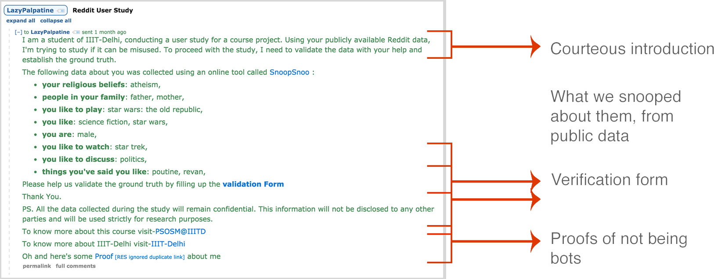
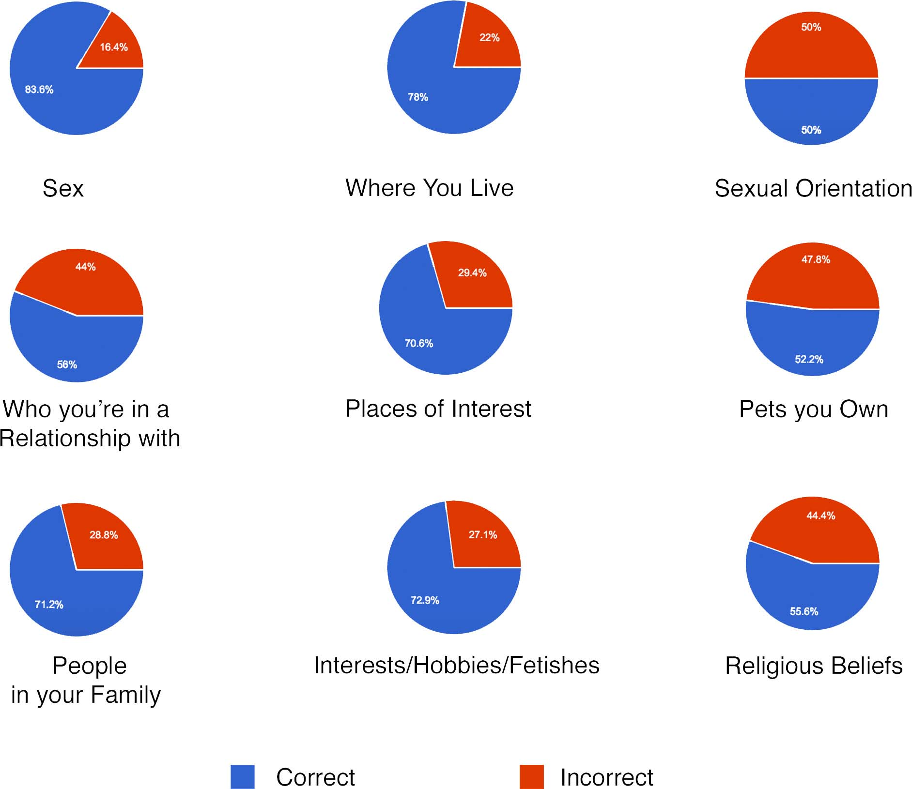
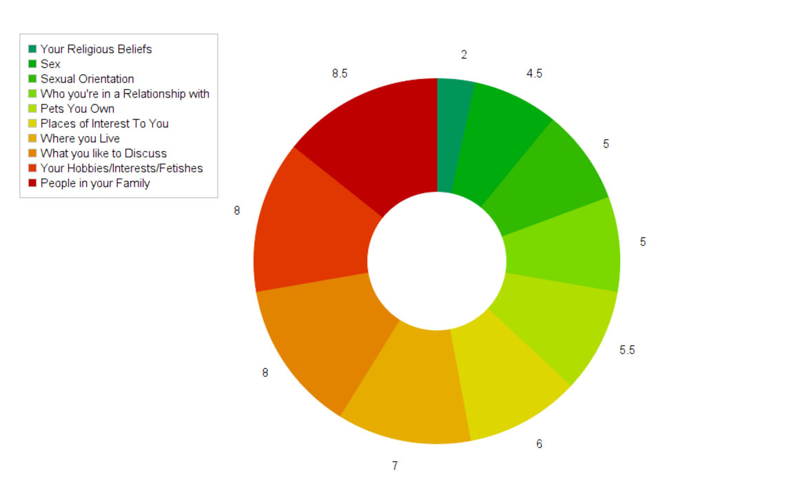

Most Vulnerable Combination
Once features have been extracted, the tool computes what are the possible combinations of features an attacker might learn. A prior study was used to have users rate which set of features at the hands of a predator would make them feel vulnerable. The percentage of each such combination is presented.
The best way to understand this is, “50% of people feel vulnerable only when their family members and location is known.”
Method
Getting the Users
A survey to collect the Reddit handles within the institute was sent, to get the ground truth. However, the response was very low, due to which few hundreds of active Reddit handles were handpicked from various subreddits. Only content generators and creators were selected rather than simple spectators.
Obtaining Ground Truth

Initial analysis of the collected user profiles was via their an online Reddit analytics tool called SnoopSnoo. The results were then sent to the said users as private messages and asked to fill a form to verify the accuracy and authenticity of the results. These results were then used as ground truth for SnooKnows.
User Data Analysis

img. The accuracy of our extractions based on the ground truth.
A third party Natural Language Processing API, known as TextRazor to analyse various features from their publicly available comments. The API extracts various things like Entities and Relationships from the given text which are then used to get attributes like things user likes to discuss, user’s relationships and people in the family.
The API also gives the broad list of topics based on the text based on a “contextual score”.
Data sensitivity analysis

img. How vulnerable on a scale of 1-10 an average users feel if a predator learns of about one of the fields
Another survey was floated to analyse what kind of data, if gathered about anonymous users, could be sensitive and thereby potentially used against them for harassment. This survey was sent to the students in the institute and to the Reddit community for results. These were then combined at the end, for analysis, and used to come up with a vulnerability score for a Reddit user.
Based on the score they get, the potential of them being harassed on Reddit gets depicted too. We even provide users with links to the sensitive information they posted on Reddit.
Application Flow
Existing Alternative
SnoopSnoo is a publicly accessible dashboard that shows many different analytics for Reddit users and guesses features similar to SnooKnows. However, this dashboard doesn’t aim to measure vulnerability of a user and simply extracts a lot of data.
Future
Improvement of Vulnerability Score
Based on the studies, only the sensitivity of the field has been determined, but not of its value. The overall results indicate that sexuality is not a very sensitive feature. However, this may be biased because the sample size was comprised of heterosexual individuals.
User Authentication
Naturally, only a given Reddit user may be allowed to check their vulnerability.
Attack Tool
Currently this is a defence tool but its usefulness in offensive measures needs to be explored.